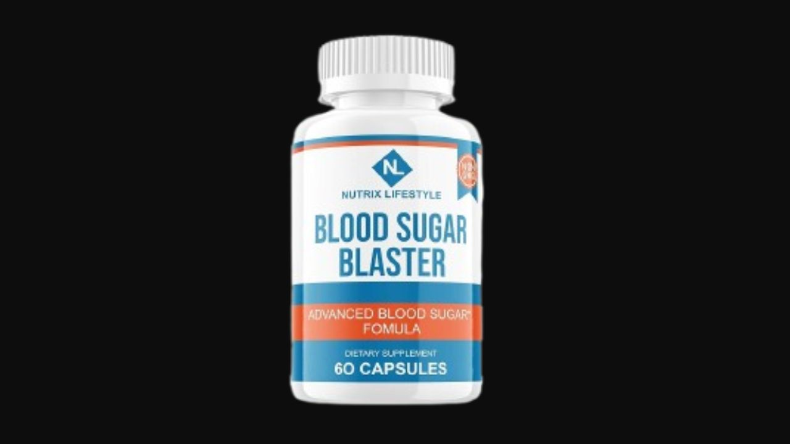

I analyzed all 20 bioavailable fruit, flower, and bark extracts in this blood sugar formula. Here's the honest truth — including why the 180-day guarantee is the most important thing to know before buying.
▶ Watch our full Blood Sugar Blaster video review before buying

Blood Sugar Blaster's primary differentiator is breadth: 20 bioavailable extracts targeting blood sugar from more angles than most competitors. The combination of Cinnamon Bark, Chromium, Banaba Leaf, Bitter Melon, and Guggul covers insulin sensitivity, glucose transport, fat metabolism, and cardiovascular support simultaneously. The 180-day guarantee is the most generous in the blood sugar category and signals genuine confidence in the formula. For adults with persistent blood sugar instability unresolved by simpler supplements, this comprehensive 20-extract approach is worth the trial.
Blood Sugar Blaster is a blood sugar support supplement formulated by Dr. Mat Carter — a physician with a background from the School of Medicine at the University of Kansas — using insights from an ancient Hindu manuscript on blood sugar management. The formula delivers 20 bioavailable fruit, flower, and bark extracts alongside essential vitamins and minerals, all peer-reviewed for their blood sugar impact.
Manufactured in an FDA-registered, GMP-certified facility in Utah, USA. All natural, non-GMO, gluten-free, vegan-friendly. Backed by peer-reviewed research on every ingredient.
Blood Sugar Blaster's formula is built around 20 extracts that work synergistically. Here are the most clinically significant:
The anchor ingredient. At 50mg of standardized Cinnamomum Cassia, Blood Sugar Blaster delivers a potent insulin-mimetic dose. Active compound MHCP activates cellular glucose uptake pathways independently of insulin. Multiple meta-analyses confirm significant reductions in fasting blood glucose and HbA1c with cinnamon supplementation. The specific 50mg dose reflects the clinically studied range.
Essential trace mineral that serves as a cofactor for insulin receptor function. Chromium deficiency — extremely common in Western diets due to food processing — directly impairs insulin sensitivity. Supplementing corrects this deficiency and restores the efficient insulin response that blood sugar stability depends on.
Corosolic acid from Banaba Leaf facilitates glucose transport into cells via GLUT4 activation — independent of insulin signaling. This dual action (enhancing both insulin sensitivity AND non-insulin glucose uptake) makes Banaba Leaf a particularly valuable ingredient for adults with insulin resistance.
One of the most studied botanicals for blood sugar management in traditional Asian medicine. Charantin and polypeptide-P compounds in Bitter Melon mimic insulin activity, improve glucose utilization in cells, and reduce hepatic glucose production. Research shows meaningful reductions in fasting blood glucose with consistent use.
Ancient Ayurvedic resin with documented effects on lipid metabolism — supporting healthy cholesterol and triglyceride levels that are closely linked to insulin resistance and metabolic syndrome. Guggul's AMPK-activating properties also support fat metabolism and metabolic rate.
Capsaicin in cayenne supports blood circulation to metabolic organs, enhances thermogenesis, and promotes insulin sensitivity through AMPK activation. Also supports cardiovascular health — particularly relevant as blood sugar issues and heart health are closely interrelated.
Juniper Berry provides antioxidant support protecting pancreatic beta cells and blood vessel walls from oxidative damage associated with chronic high blood sugar. The remaining 14 extracts include a comprehensive vitamin and mineral complex targeting energy metabolism, immune function, and overall metabolic balance.
"I started using Blood Sugar Blaster because it was recommended to me by a nurse/therapist who understood my issue. After 2 months of using it I feel a lot more better and I don't feel dizzy as before. I take it 2 times a day and I love it!"
"I purchased your blood sugar pill and it's doing great for me. I take a pill with breakfast, lunch and dinner. It works like a multivitamin. Recommended it to my sister."
"As someone in my 60s, I was looking for a natural way to support my blood sugar without the harsh side effects of medications. Your blood sugar pill is amazing — I feel like I have more energy and I can sleep better, I also see more stable blood sugar and blood pressure levels too."
The most generous guarantee in the blood sugar supplement category. Return even empty bottles within 180 days for a full refund. No questions asked.
180-Day Guarantee · 20 Extracts · Free Shipping · Made in USA
→ Visit Official Blood Sugar Blaster Website180-Day Guarantee · 20 Extracts · Free Shipping · Made in USA
→ Get Blood Sugar Blaster at the Official PriceAffiliate Disclosure: This review contains affiliate links. We may earn a commission at no additional cost to you. See our Affiliate Disclosure. Not evaluated by the FDA. Not intended to diagnose, treat, cure, or prevent any disease.